6 —
Overview
The VERITRACE web application, currently in its ‘alpha’ stage of development, represents an ambitious step towards new research methodologies. This preliminary version is not yet publicly accessible, requiring substantial further work; it serves more as a promise of future capabilities. Central to its current iteration, researchers are testing a BERT-based Large Language Model (LLM), specifically LaBSE (Language-agnostic BERT Sentence Embedding), to generate vector embeddings. These embeddings aim to represent every passage within the project’s extensive textual corpus. However, initial assessments suggest this model may not ultimately prove sufficient for the complex demands of the research. The screenshots presented herein offer a glimpse into the application’s design and potential, though they remain a very poor substitute for direct interaction with the evolving platform.
6.1 The VERITRACE Project: Uncovering Ancient Wisdom’s Influence
The VERITRACE project, a five-year ERC Starting Grant initiative, embarks on an ambitious journey to trace the intellectual currents flowing from the early modern ‘ancient wisdom’ tradition into the burgeoning field of natural philosophy and science of that era. This tradition manifests in a diverse collection of works, including notable texts such as the Chaldean Oracles, the Sibylline Oracles, the Orphic Hymns, and perhaps most famously for historians of chemistry, the Corpus Hermeticum. These 140 core texts form a ‘close reading corpus’, providing a focused lens on this influential body of thought.

Historical records confirm the impact of these ancient wisdom texts; for instance, Newton engaged with the Sibylline Oracles, and Kepler possessed familiarity with the Corpus Hermeticum. Nevertheless, the project seeks to delve deeper, aiming to uncover a far broader network of texts and intellectual connections that interacted with this tradition. Many of these works, often penned by lesser-known authors, constitute what one scholar has termed ‘the great unread’, frequently overlooked by historians due to their sheer volume and obscurity. Consequently, VERITRACE focuses on bringing these neglected sources to light.
6.2 Advancing Computational History, Philosophy, and Sociology of Science (HPSS)
To address its core research questions, the VERITRACE project pioneers large-scale, multilingual exploration within the domain of computational History, Philosophy, and Sociology of Science (HPSS). The team develops tools not only for conventional keyword searching but also for the sophisticated identification of textual reuse. This encompasses both direct, lexical quotation—instances where authors use verbatim material from other works, perhaps without explicit citation—and more subtle, indirect influences. Such indirect reuse might involve paraphrase or allusions that, whilst not direct copies, would have been recognisable to contemporary readers as originating from sources like the Corpus Hermeticum.
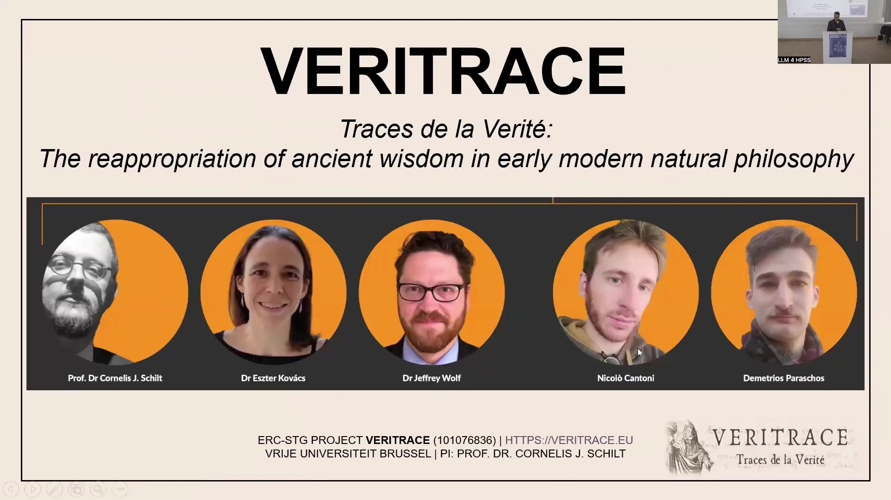
Effectively, the project endeavours to construct an ‘early modern plagiarism detector’ capable of navigating a vast, multilingual corpus. Beyond identifying direct and indirect textual linkages, a primary objective is to uncover previously ignored networks of texts, passages, themes, topics, and authors. Through this comprehensive analytical approach, researchers anticipate the emergence of new patterns and insights into the intellectual history and philosophy of science.

6.3 Navigating a Vast Multilingual Corpus
The foundation of this investigation rests upon a large, diverse, and multilingual dataset, focusing exclusively on printed books and texts, thereby excluding handwritten materials from its current scope. This corpus draws from three primary data sources and encompasses works in at least six different languages, published over approximately two centuries. The chronological parameters span from 1540, chosen for specific historical reasons, to 1728, shortly after Newton’s death.
Key data repositories include:
Early English Books Online (EEBO)
Gallica, the digital library of the French National Library
The Bavarian State Library, which constitutes the largest single source
Collectively, these sources contribute to a corpus of roughly 430,000 books. State-of-the-art digital techniques are employed to analyse this extensive collection of early modern texts.

6.4 Core Challenges and the Role of Large Language Models
Several core challenges are inherent in a project of this scale and complexity. Variable Optical Character Recognition (OCR) quality presents a significant hurdle. The textual data, supplied directly by libraries in raw formats such as XML, HOCR, or even HTML files, often lacks ground truth page images. This variability in OCR accuracy inevitably affects all downstream processing and analytical tasks. Managing early modern typography and semantics across at least six languages introduces further complexities. Furthermore, the sheer volume of data—hundreds of thousands of texts printed across Europe over nearly 200 years—demands robust computational strategies.
Large Language Models (LLMs) play a crucial role in addressing these challenges. On the decoder side, GPT-based LLMs assist in enriching and cleaning metadata, acting as ‘judges’ in this process. Whilst this application holds considerable interest, the current focus shifts towards the encoder side. Here, BERT-based LLMs generate embeddings to encode the semantic meaning of sentences and short passages (groups of sentences) within the textual corpus. This encoding is fundamental to the project’s semantic matching capabilities.
6.5 Employing LLMs as Judges for Metadata Enrichment
One specific, albeit challenging, application of LLMs within VERITRACE involves their use as ‘judges’ to enrich metadata. The basic motivation stems from the desire to map records from high-quality external sources, such as the Universal Short Title Catalogue (USTC), onto the project’s own records. Successful mapping creates enriched metadata, less likely to require extensive manual cleaning.
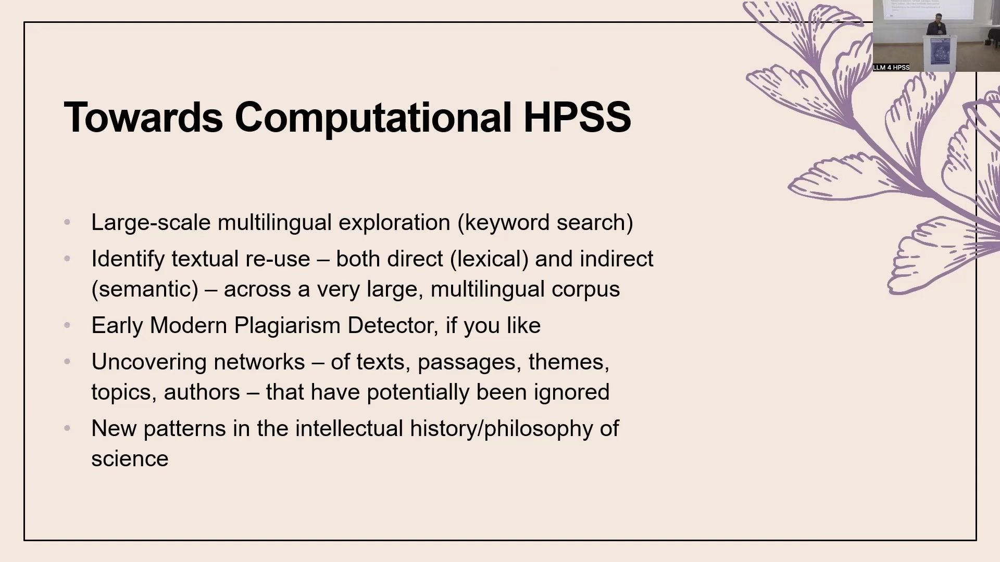
Whilst some mapping can be automated using external identifiers, many records lack such straightforward connections. Compounding this, much of the project’s internal data has not yet undergone cleaning, making matching a non-trivial task. The manual comparison of bibliographic metadata—assessing pairs of records to determine if they represent the same underlying printed text—is exceedingly tedious. Team members faced the prospect of reviewing tens of thousands of such pairs, highlighting the need for an automated solution.
6.5.1 Initial Attempts and Emerging Hurdles
To address this, researchers are exploring a panel, or ‘bench’, of LLMs. Extensive prompt guidelines direct these models to evaluate potential matches, which are initially generated via fuzzy matching algorithms. The LLMs provide yes/no decisions along with reasoning for why a pair of records may or may not represent the same underlying text.
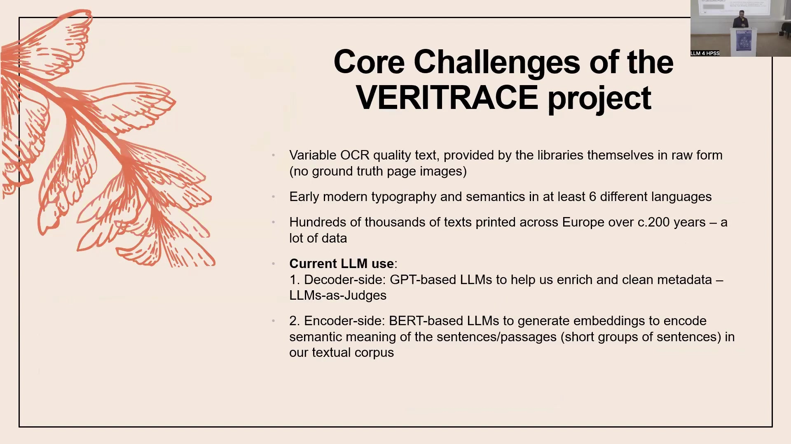
This endeavour remains a work in progress. A major current challenge is the prevalence of hallucinations in the output from the open-source models (e.g., Llama-based) currently under evaluation. Attempts to mitigate this by requesting more structured output, paradoxically, often lead to more generic and less helpful responses, particularly in the reasoning provided by the models. Achieving the right balance in prompting to elicit accurate and insightful judgments is an ongoing refinement process. Despite these initial difficulties, the potential for LLMs to save considerable time in metadata enrichment remains significant, and further investigation is warranted.
6.6 Introducing the VERITRACE Web Application
The VERITRACE web application serves as the primary interface for exploring the project’s data and analytical tools. This platform is exceptionally new; indeed, its introduction here marks its first public discussion, preceding even internal team dissemination. As an ‘alpha’ version, it is not yet publicly available and remains under active development on a local machine, with screenshots offering a preliminary view. It functions more as a demonstration of the project’s aspirations than a finalised product.
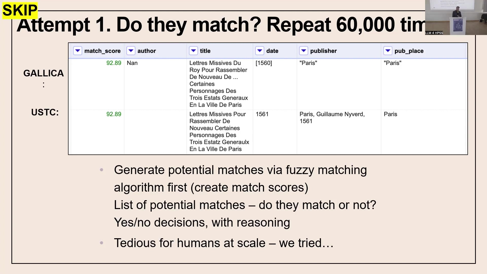
Currently, testing involves a BERT-based LLM (LaBSE) to generate vector embeddings for every passage in the corpus. However, early indications suggest this model may not possess the requisite sophistication for the project’s ultimate goals, particularly for nuanced semantic matching. The application’s development continues, with these initial explorations informing future refinements.
6.7 The Data Processing Backbone
Transforming raw textual data from library sources into a queryable format within an Elasticsearch database—the backend of the web application—involves an intricate data processing pipeline. This multi-stage process is far from a simple button-push operation. Numerous steps are essential to prepare the data for analysis.
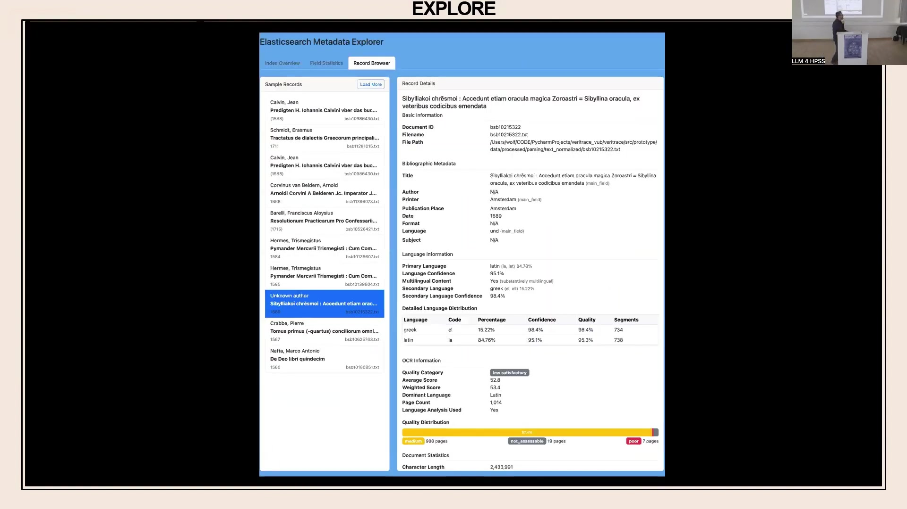
These steps include:
Extracting text into manageable files.
Generating mappings of all character positions.
Segmenting texts into meaningful units.
Assessing OCR quality.
Each of these fifteen stages requires careful optimisation. The generation of embeddings, crucial for semantic analysis, occurs near the end of this complex pipeline. Significant background work underpins the functionality accessible through the web interface.
6.8 Exploring the VERITRACE Corpus: Statistics and Metadata
The VERITRACE web application offers several modules for interacting with the corpus. The ‘Explore’ section, for instance, provides users with comprehensive statistics about the dataset, drawn directly from a MongoDB database. At present, this encompasses 427,305 metadata records describing the books within the collection. This area allows researchers to gain an overview of the corpus’s composition, including language distributions, data sources, publication decades, and prominent publication places.
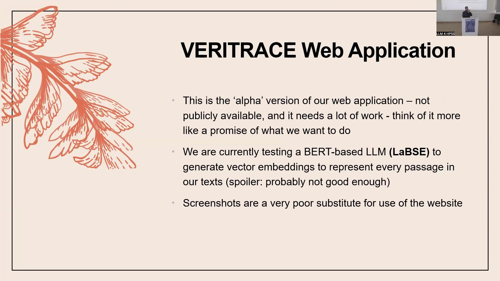
Beyond aggregate statistics, a ‘Metadata Explorer’ enables users to browse and inspect the rich metadata associated with each text. A key feature here is detailed language information. Language identification algorithms operate on every text, down to segments of approximately 50 characters. This granularity is vital because many early modern texts are multilingual, often containing sections in Greek or other languages alongside the primary Latin, for example. The system identifies these languages and their proportions within each document—such as a text being 15% Greek and 85% Latin—classifying them as ‘substantively multilingual’.
Furthermore, the system attempts to assess OCR quality on a page-by-page basis. This is a challenging task without access to ground truth page images, relying instead on analysis of the raw text. Nevertheless, providing page-level quality assessments, rather than a single score for an entire book, offers more nuanced information for researchers. The efficacy of this OCR assessment method continues to be evaluated.
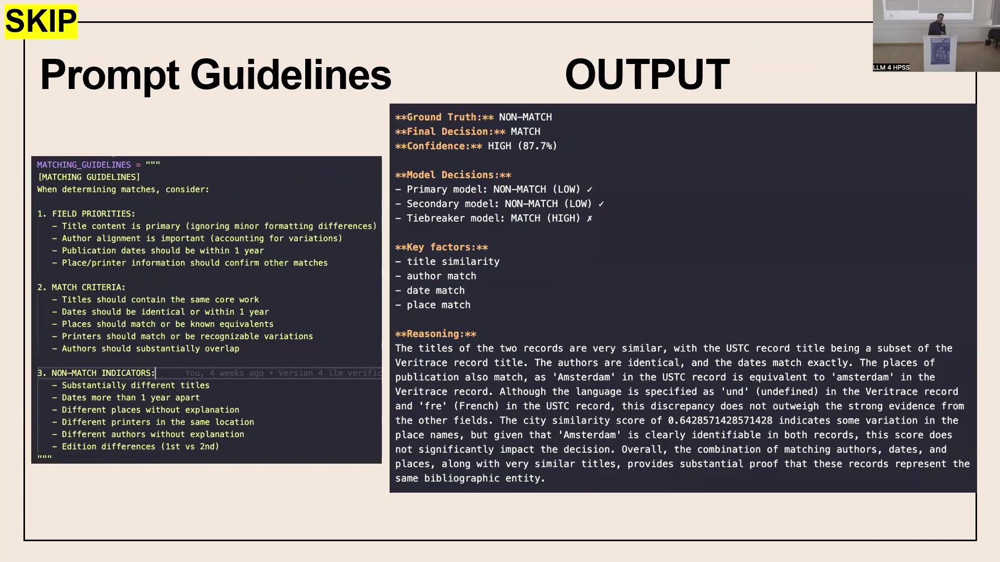
6.9 Search, Analysis, and Reading: Tools for Scholarly Inquiry
For many scholars, the ‘Search’ function will likely be the initial point of engagement. The web application supports standard keyword searches across the corpus. Even with a prototype dataset of only 132 files (rather than the full 430,000), the Elasticsearch index already occupies 15 gigabytes, hinting at the terabytes of data the full system will manage. A simple search for “Hermes” in this prototype, for example, might yield 22 documents with 332 total matches.

Leveraging the power of Elasticsearch, users can execute far more complex queries. Fielded queries allow searching within specific metadata, such as finding all books by Kepler that also contain the keyword “Hermes”. Advanced capabilities include Boolean operators (AND, OR), nested queries, and proximity searches—for instance, locating texts where “Hermes” and “Plato” appear within ten words of each other.
An ‘Analyse’ section is planned, though not yet implemented. This module will incorporate tools for:
Topic modelling
Latent Semantic Analysis (LSA)
Diachronic analysis, to explore linguistic and conceptual shifts over time.
Insights from the wider research community inform the development of these analytical features.
Recognising the importance of accessing original source materials, a ‘Read’ section integrates a Mirador viewer. This allows scholars to view PDF facsimiles of every text in the corpus, alongside its metadata, mirroring the experience of browsing a physical library’s digital collection.
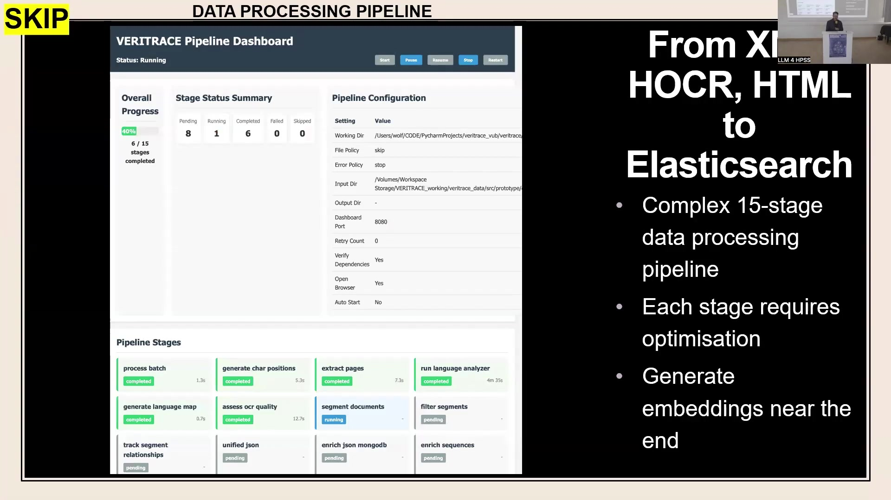
6.10 Unveiling Textual Reuse: The Match Functionality
A cornerstone of the VERITRACE web application is its ‘Match’ section, designed to identify textual reuse between different works. This tool allows users to specify query texts and comparison texts. Comparisons can be performed between single documents, across multiple selected documents (e.g., comparing Newton’s Latin Opticks to all of Kepler’s works in the database), or, ambitiously, between one text and the entire corpus. The latter presents considerable computational challenges regarding processing time and user experience, but remains a developmental goal.
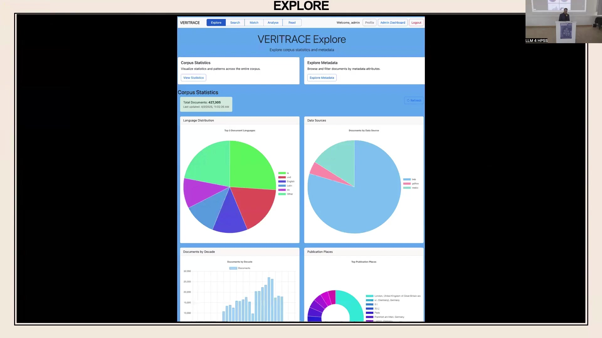
6.10.1 Lexical and Semantic Matching Approaches
The system offers two fundamental types of matching:
Lexical matching: This approach uses keyword-based techniques to find passages with similar vocabulary. It is effective for identifying direct textual parallels but is language-dependent.
Semantic matching: Employing vector embeddings, this method seeks conceptually similar passages, even if they share little or no common vocabulary. This is crucial for a multilingual corpus where translations or paraphrases might obscure lexical links.
Hybrid approaches, combining lexical and semantic methods with adjustable weighting, are also available.
6.10.2 Customisable Parameters for Nuanced Analysis
Recognising that text matching is not a one-size-fits-all process, the interface exposes numerous parameters for users to tweak. Whilst default settings provide a balanced starting point, users can adjust elements such as minimum similarity scores to refine search results according to their specific research needs. Different matching modes—‘Standard’, ‘Comprehensive’ (for maximum recall, albeit slower), and ‘Faster’ (for higher precision with potentially fewer results)—offer further control over the comparison process.
6.11 Validating the Approach: Sanity Checks and Case Studies
To evaluate the efficacy of the matching tools, researchers conduct several ‘sanity checks’ using known textual relationships. One such check involves comparing Newton’s Latin version of his Opticks (1719 edition) with the English edition from 1718. These texts, being translations of each other, provide a useful test case.
6.11.1 Sanity Check 1: Lexical Matching Across Languages
When a lexical match is performed between the Latin and English editions of Opticks, the expectation is that no significant matches will be found, given their different languages. Using the ‘Standard’ matching mode, this holds true—no matches are reported. Interestingly, the ‘Comprehensive’ mode does identify three matches, revealing small sections of English text, likely from prefatory material, within the predominantly Latin edition. This demonstrates the sensitivity of different modes and confirms the general principle that lexical matching is language-specific.

6.11.2 Sanity Check 2: Lexical Self-Matching
As another baseline, lexically matching a text against itself should, ideally, yield near-perfect results. When Newton’s English Opticks is compared to itself, the system reports a high degree of similarity, with extensive coverage and quality scores. The interface provides detailed statistics, including the number of passages compared and the distribution of similarity scores, offering transparency into the matching process. Automatic highlighting displays the query passage on the left and the comparison passage on the right, along with their similarity score.
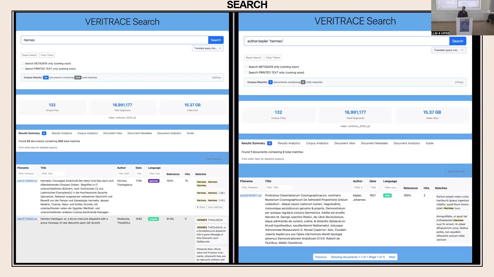
6.11.3 Sanity Check 3: Semantic Matching of Translations
The real test for the LLM-powered tools comes with semantic matching across languages. When comparing the Latin and English Opticks using semantic matching, the system should identify conceptual similarities despite the linguistic differences.
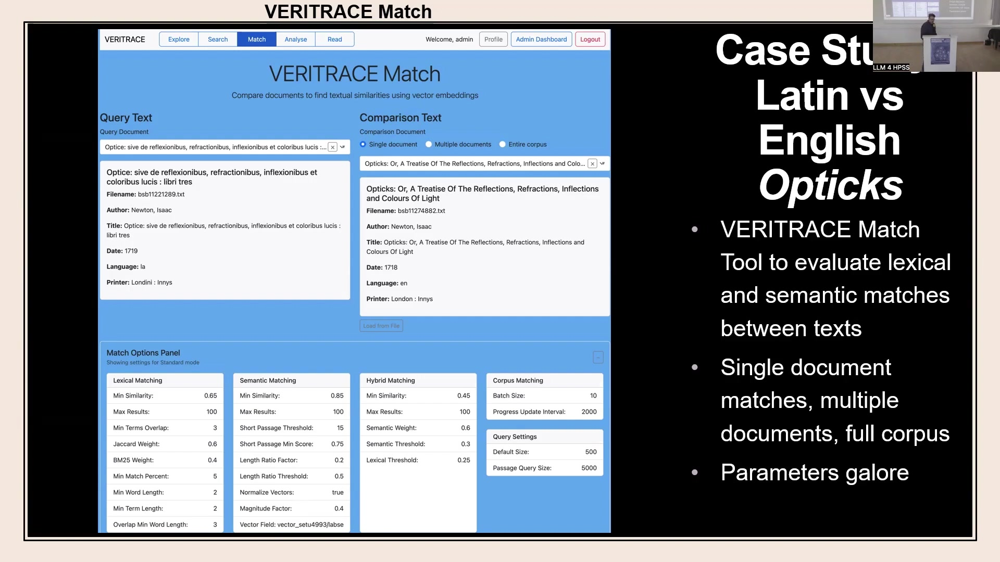
Initial results from such semantic comparisons appear reasonable. Passages discussing similar concepts, such as colours, are identified as matches, even with underlying OCR imperfections. This suggests that the vector embeddings are capturing some level of conceptual correspondence across translations.
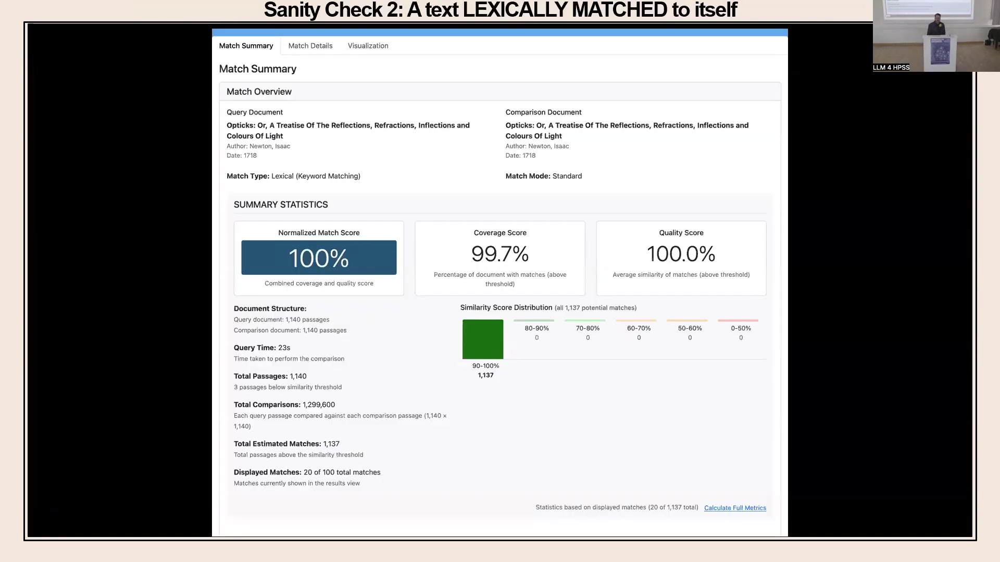
6.11.4 Preliminary Findings and Model Adequacy
However, the semantic matching performance is not without its issues. Whilst the quality score for identified matches can be high, indicating strong similarity for the pairs found, the coverage score—representing how much of the documents are involved in matches—can sometimes be lower than expected. This discrepancy might, in part, reflect genuine differences between editions; for instance, the Latin edition of Opticks is considerably longer than the English one.
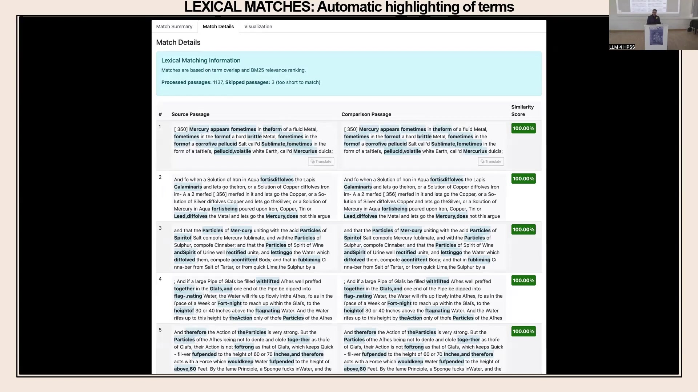
Nevertheless, further queries using the current LaBSE embedding model suggest it may not be entirely adequate for the nuanced demands of historical textual analysis. The potential for ‘out-of-domain model collapse’—where a model trained on general modern text performs poorly on specialised historical corpora—is a concern.
6.12 Future Directions and Outstanding Challenges
As the VERITRACE project progresses, several critical issues and areas for development lie on the horizon. The choice of vector embedding model is paramount. LaBSE, selected partly for its efficiency in terms of storage and processing speed, may prove insufficient. Alternative models, such as XLM-Roberta, intfloat multilingual-e5-large, or specialised historical mBERT variants, present other trade-offs between accuracy, storage requirements, and inference time. A fundamental question is whether to persist with pre-trained models or to invest in fine-tuning a base model specifically on the VERITRACE historical corpus.

Further challenges include:
Semantic drift: The meaning of words and concepts changes over time. How effectively current LLMs handle such diachronic semantic shifts across centuries and languages within the same vector space remains an open question.
OCR quality: Poor OCR accuracy profoundly impacts downstream tasks, from basic sentence segmentation to complex semantic analysis. Re-OCRing the entire corpus is not feasible. Strategies might involve selectively re-OCRing the poorest quality texts or investing effort in locating existing higher-quality digital versions.
Scaling and performance: The current prototype, operating on only 132 texts, already shows query times of around 15 seconds for complex operations. Scaling these capabilities to the full corpus of 430,000 texts will undoubtedly present significant performance engineering challenges.
Addressing these multifaceted issues will be crucial for realising the full potential of VERITRACE to illuminate the complex intellectual heritage of early modern science. Continued research, methodological refinement, and community engagement will guide these future endeavours.